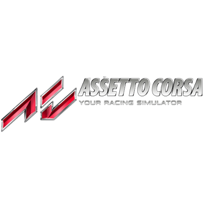
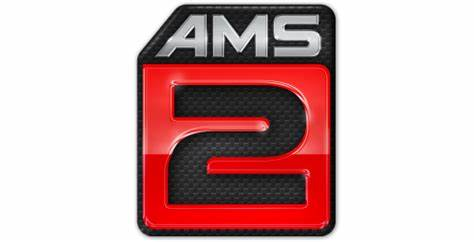

Assetto Corsa
Assetto Corsa es un simulador de carreras que intenta ofrecer una experiencia de conducción realista con una variedad de autos de carreras a través de la física detallada y la simulación de llantas en pistas de carreras recreadas a través de la tecnología de escaneo láser. Es compatible con una amplia gama de periféricos, como el mouse, el teclado, las ruedas, los gamepads, las pantallas triples, el seguimiento de la cabeza TrackIR y las pantallas montadas en la cabeza VR, así como los sistemas Nvidia 3D Vision y de movimiento profesional. El software se puede ampliar a través de contenido de terceros modificado.
Automovilista 2
Automobilista 2 es la culminación de un proyecto desarrollado en el transcurso de casi una década. En esencia, es una simulación completa de la escena del automovilismo brasileño, que presenta todas las principales series de carreras brasileñas, pistas de carreras y fabricantes.
Assetto Corsa Competizione
Assetto Corsa Competizione es un videojuego de carreras desarrollado por la empresa Kunos Simulazioni con licencia oficial de Blancpain GT Series 2018. nicialmente, el videojuego iba a utilizar un motor gráfico creado por la misma desarrolladora; el mismo usado en Assetto Corsa, pero contactaron con Unreal Engine para contar con un motor que permita carreras nocturnas y condiciones climáticas realistas. Con el nuevo motor, se mejoró los modelos de neumáticos y de física aerodinámica utilizados en el título anterior, como animaciones de captura de movimiento, audio y el enfoque detallado en una sola categoría o clase de autos. Todos los autódromos de Blancpain GT Series, tanto de la serie Endurance como de Sprint, están siendo reproducidos con escaneo láser.